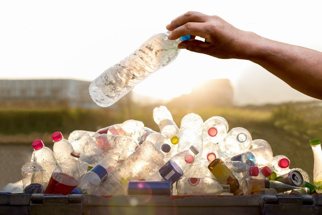
01
Botol Plastik
Kenali bagaimana botol plastik dapat dipilah dan dimanfaatkan kembali.
Pernah bertanya ke mana sampah pergi setelah meninggalkan tangan kita? Behind The Bin mengajak kita melihat perjalanan sampah dari sumber sampai akhir.
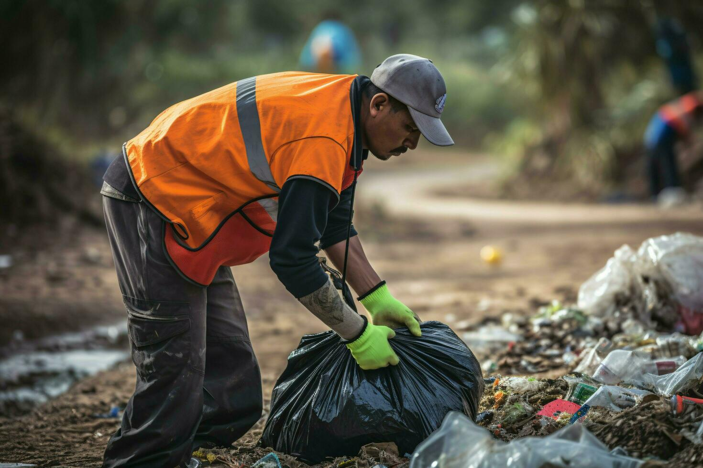
Membuang sampah adalah satu langkah kecil dalam perjalanan yang jauh lebih panjang. Setelah itu masih ada proses pengumpulan, pengangkutan, pemilahan, pengolahan, hingga penanganan residu.
Karena itu, memahami sistemnya membantu kita melihat bahwa pengelolaan sampah bukan hanya urusan tempat pembuangan akhir.
Data membantu kita melihat bahwa persoalan sampah bukan hanya tentang berapa banyak yang dibuang, tetapi juga berapa banyak yang benar-benar masuk ke dalam sistem pengelolaan.
Masuk dalam proses pengelolaan.
Belum masuk dalam pengelolaan yang tercatat.
Setiap jenis sampah memiliki karakter dan cara penanganan yang berbeda. Kenali sebelum membuangnya.

Kenali bagaimana botol plastik dapat dipilah dan dimanfaatkan kembali.
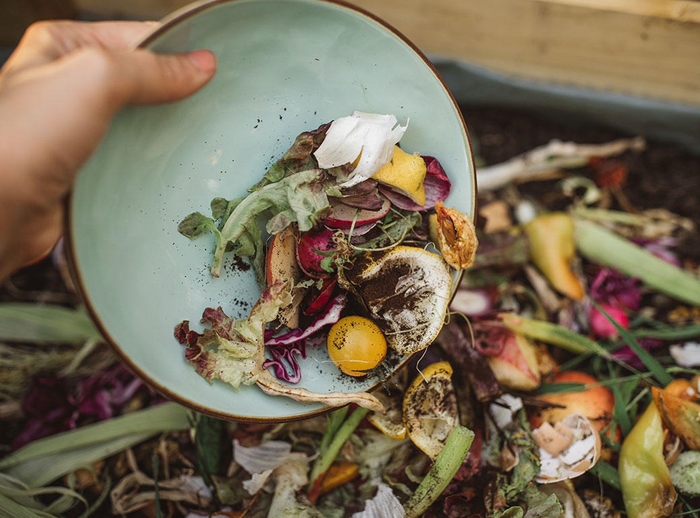
Sampah organik dapat dipisahkan sejak dari sumber untuk diproses dengan tepat.
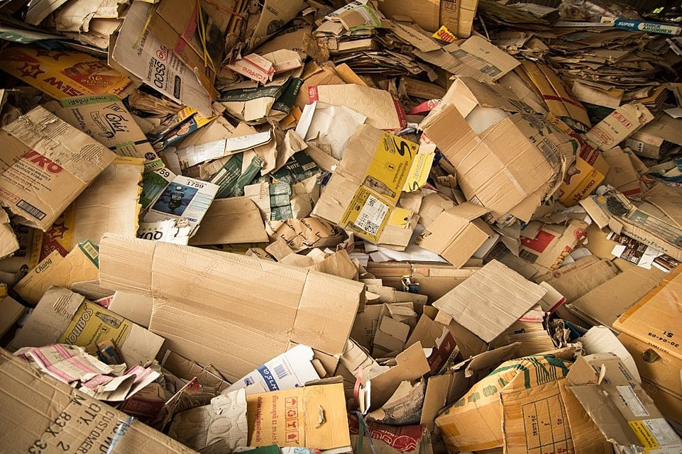
Kardus yang masih layak dapat digunakan kembali atau dipilah untuk didaur ulang.
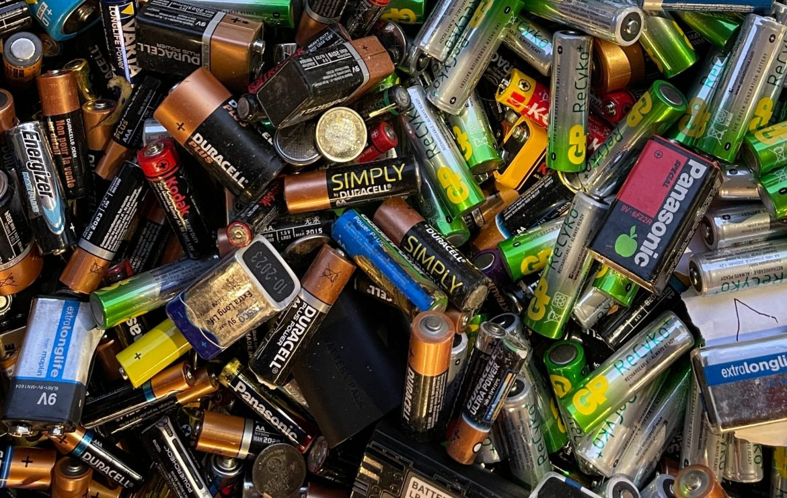
Baterai bekas perlu dipisahkan karena membutuhkan penanganan khusus.
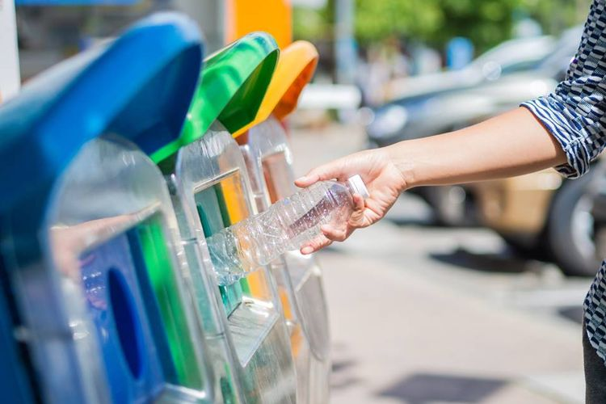
Botol plastik merupakan salah satu jenis sampah yang sering kita temui dalam kehidupan sehari-hari. Namun, botol yang sudah dibuang tidak selalu harus langsung menjadi sampah akhir. Jika dipilah dengan benar, sebagian plastik dapat dikumpulkan dan dimanfaatkan sebagai bahan baku daur ulang.
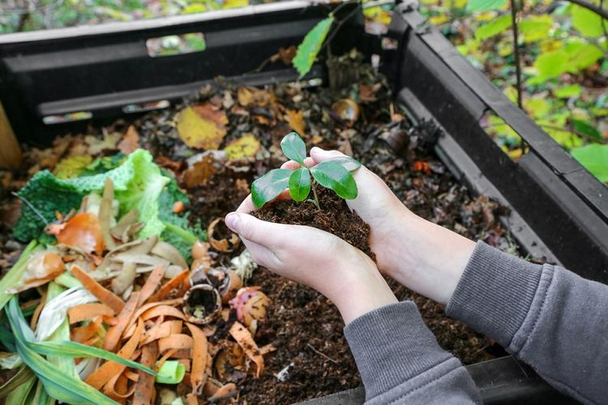
Sisa makanan termasuk sampah organik. Ketika tercampur dengan sampah lain, pengelolaannya menjadi lebih sulit. Karena itu, memisahkan sisa makanan sejak dari sumber menjadi salah satu langkah penting dalam pengelolaan sampah.
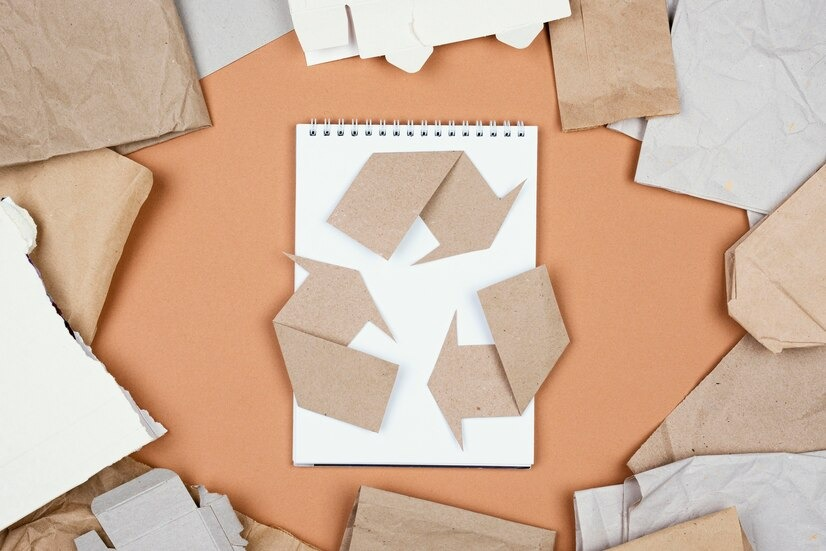
Kardus termasuk material yang dapat digunakan kembali maupun dikumpulkan untuk proses daur ulang. Kondisi kardus menentukan langkah yang paling tepat setelah digunakan.
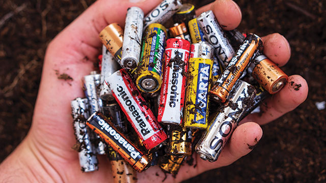
Baterai bekas membutuhkan perhatian khusus. Dalam aturan pengelolaan sampah yang mengandung B3 dan/atau Limbah B3, baterai sel kering litium, baterai sel kering nonlitium, dan baterai sel basah termasuk contoh barang elektronik yang perlu mendapatkan penanganan khusus.
Tempat sampah hanyalah titik awal. Setelah itu, sampah melewati beberapa proses yang saling berhubungan.
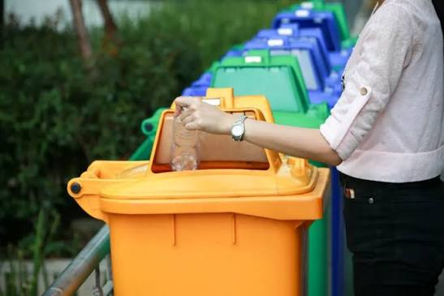
Sampah muncul dari aktivitas sehari-hari di rumah, sekolah, tempat kerja, pasar, dan ruang publik.
→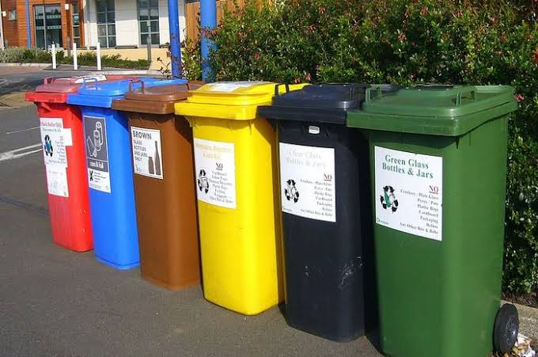
Sampah ditempatkan pada wadah sebelum masuk ke proses pengumpulan.
→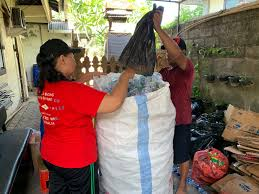
Sampah dikumpulkan dari sumber untuk kemudian dibawa ke tahap berikutnya.
→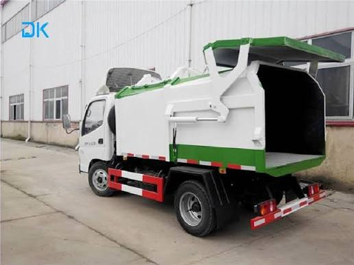
Sampah dipindahkan menuju fasilitas pengelolaan atau tempat pemrosesan.
→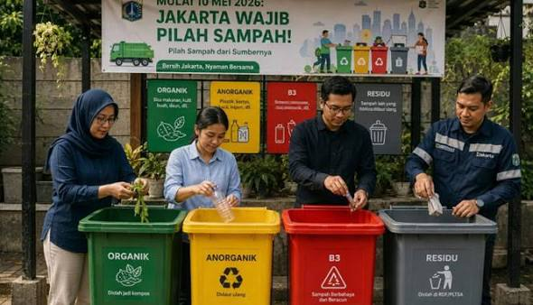
Material dipisahkan berdasarkan jenis dan kemungkinan untuk dimanfaatkan kembali.
→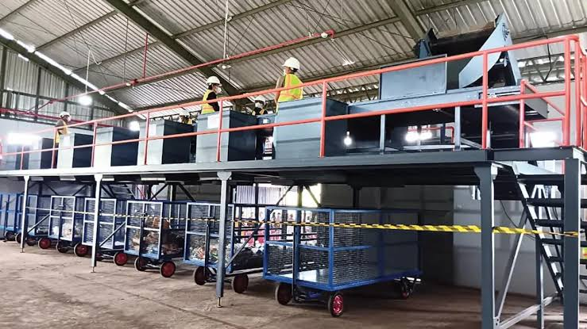
Material yang masih memiliki nilai dapat masuk ke proses pengolahan.
→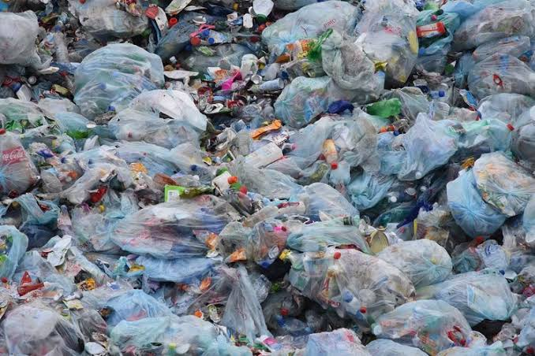
Sisa material yang tidak dapat dimanfaatkan kembali perlu ditangani melalui sistem yang sesuai.
→Sistemlah yang menentukan ke mana ia berakhir.
Pengelolaan sampah tidak hanya dilakukan di tempat pembuangan akhir. Sampah perlu dikurangi, digunakan kembali, dipilah, dan diolah sejak dari sumber agar material yang masih bernilai tidak langsung menjadi residu.
Kurangi barang sekali pakai dan pilih kebutuhan yang benar-benar diperlukan.
Manfaatkan kembali barang yang masih layak sebelum menjadi sampah.
Pisahkan sampah berdasarkan jenisnya agar lebih mudah ditangani.
Material yang masih bernilai dapat diarahkan ke proses pengolahan yang sesuai.
Sisa material yang tidak dapat dimanfaatkan kembali tetap perlu ditangani dengan benar.
Target 2029 merupakan arah kebijakan menuju pengelolaan sampah yang lebih menyeluruh. Ini adalah target yang dituju, bukan capaian yang sudah selesai.
Fokus pada pembenahan sistem, pengawasan, dan pengurangan praktik pembuangan terbuka.
Pengembangan fasilitas pengelolaan menjadi bagian penting dari proses.
Sistem diarahkan agar semakin menjangkau sampah dari hulu sampai hilir.
Target nasional diarahkan pada pengelolaan sampah yang menyeluruh.
Mengurangi sampah, menggunakan kembali barang, dan memilah sampah dari sumber sesuai fasilitas yang tersedia.
Menyusun kebijakan, menyediakan fasilitas, melakukan pengawasan, dan memastikan sistem berjalan.
Mengurangi dampak produk dan kemasan serta mendukung pengelolaan setelah produk digunakan.
Menjalankan pengumpulan, pengangkutan, pemilahan, pengolahan, dan penanganan residu.